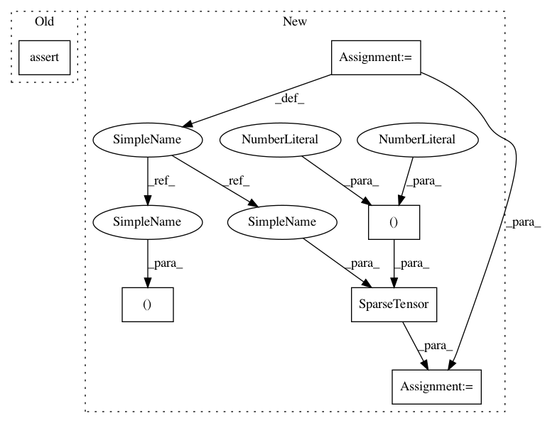

14534a49d97c0f6cc815b9a7336dc0f8497131c1,test/nn/conv/test_tag_conv.py,,test_tag_conv,#,5
Before Change
assert out.size() == (num_nodes, out_channels)
jit = torch.jit.script(conv.jittable())
assert jit(x, edge_index, edge_weight).tolist() == out.tolist()
After Change
def test_tag_conv():
x = torch.randn(4, 16)
edge_index = torch.tensor([[0, 0, 0, 1, 2, 3], [1, 2, 3, 0, 0, 0]])
row, col = edge_index
value = torch.rand(row.size(0))
adj2 = SparseTensor(row=row, col=col, value=value, sparse_sizes=(4, 4))
adj1 = adj2.set_value(None)
conv = TAGConv(16, 32)
assert conv.__repr__() == "TAGConv(16, 32, K=3)"
In pattern: SUPERPATTERN
Frequency: 3
Non-data size: 6
Instances
Project Name: rusty1s/pytorch_geometric
Commit Name: 14534a49d97c0f6cc815b9a7336dc0f8497131c1
Time: 2020-06-16
Author: matthias.fey@tu-dortmund.de
File Name: test/nn/conv/test_tag_conv.py
Class Name:
Method Name: test_tag_conv
Project Name: rusty1s/pytorch_geometric
Commit Name: 72e8ef33d6a6239b71dbd1b24edccf1e5d03d9a1
Time: 2020-06-15
Author: matthias.fey@tu-dortmund.de
File Name: test/nn/conv/test_gcn_conv.py
Class Name:
Method Name: test_gcn_conv
Project Name: rusty1s/pytorch_geometric
Commit Name: 14534a49d97c0f6cc815b9a7336dc0f8497131c1
Time: 2020-06-16
Author: matthias.fey@tu-dortmund.de
File Name: test/nn/conv/test_tag_conv.py
Class Name:
Method Name: test_tag_conv
Project Name: rusty1s/pytorch_geometric
Commit Name: 7b4892781e2198ad99a8655da03133505619040a
Time: 2020-06-28
Author: matthias.fey@tu-dortmund.de
File Name: test/nn/conv/test_arma_conv.py
Class Name:
Method Name: test_arma_conv